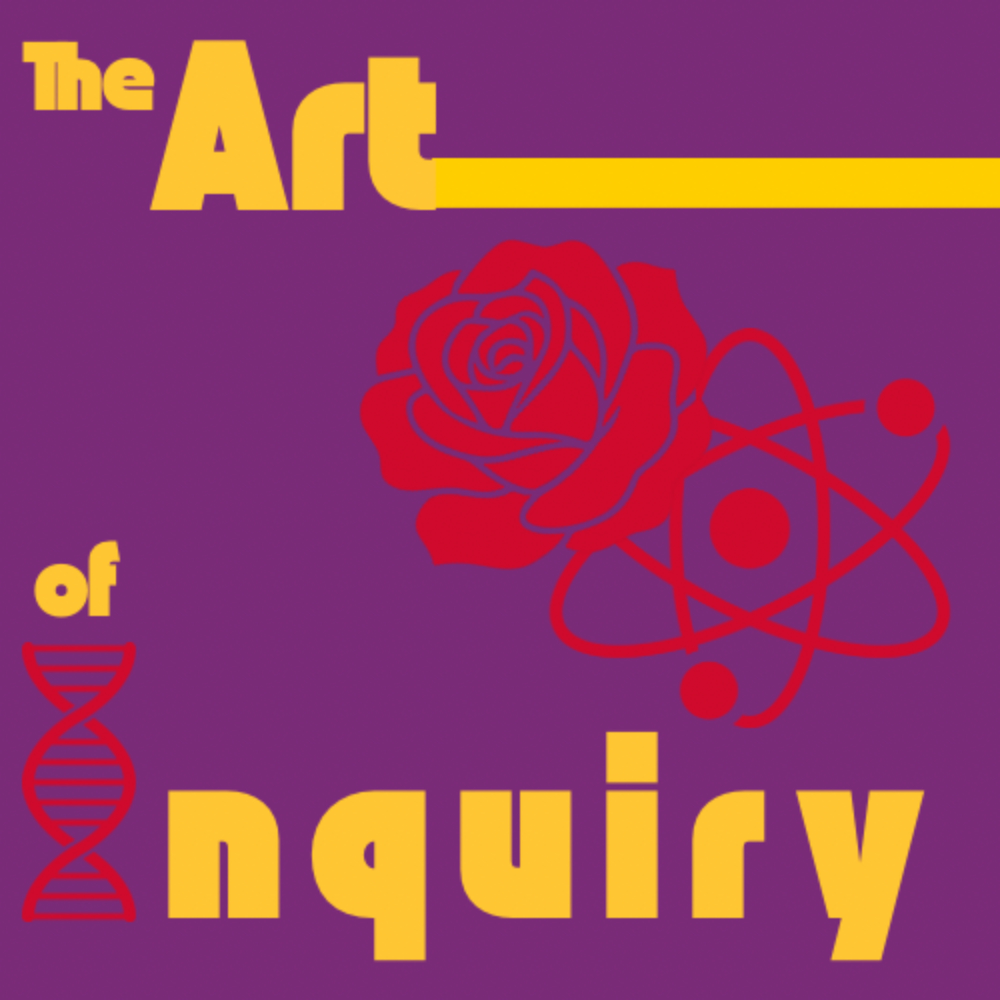

A podcast by Sofia Odeh
Science and art are not parallel paths — they are the same journey, viewed through different lenses. We sit down with researchers, designers, and thinkers who refuse to stay in one lane.

Latest Episode
Episode 06
Sara Hendren didn't start out in engineering. She started as a visual artist, then moved into cultural history, studying objects and what they say about the world that made them. Then life brought her into spaces filled with a new kind of object: gadgets and tools doing quiet therapeutic work, covered in butterflies and bugs, useful and expressive all at once. That was the moment everything snapped together. In this conversation, Sara walks us through the space between mechanical design and design for expression, and what it means to have a mentor who once built a fully functional vehicle for homeless people in New York and Philadelphia — not as charity, but as provocation.
● 55 minAll Episodes
Episode 06
Who Is the Built World Actually Built For?
From cultural history to engineering classrooms, Sara Hendren explores what designed objects say beyond their function — and why the meticulous mind of an artist and the creative mind of an engineer might be the same thing.
Episode 05
Poker, Deception, and the Limits of Truth
Philosopher Don Fallis started trying to understand how we find the truth — and ended up at the edge of a deeper question: what happens to knowledge when the world is designed to stop you from getting it?
Episode 04
Signal Processing Meets Identity
Speech scientist Rupal Patel creates personalized synthetic voices for people who cannot speak, restoring something technology had long ignored: the sound of who you are.
Episode 03
Building Eyes for Uncharted Worlds
Roboticist Hanumant Singh has led over 60 oceanographic expeditions to the most visually degraded environments on Earth. He builds machines that see so that we, for the first time, can too.
Episode 02
Where Design and AI Meet Research and Creativity
Data design pioneer Paolo Ciuccarelli explores how complex information becomes visible — and why storytelling and scientific rigor are not opposites but partners.
Episode 01
What is The Art of Inquiry?
Sofia and Maya introduce the podcast, its mission, and the question that started it all: what if science and art were never really separate in the first place?
About the Podcast
Some ideas are too alive to belong to one discipline. Art of Inquiry is a podcast about the people who follow curiosity wherever it leads, across science, art, philosophy, design, and technology. I sit down with researchers, designers, and thinkers whose work crosses boundaries and let the conversation go wherever it needs to.
Sometimes that means uncovering the artistry hidden inside hard science. Sometimes it means understanding the technical precision behind a creative vision. Every guest has refused to stay in one lane. That refusal is where the most interesting ideas live.
The podcast began in San Francisco, where my co-founder Maya Einhorn and I were both doing deeply technical work in a city that was once defined by its music, art, and spirituality. A conversation between us sharpened something we had both been feeling: that our passion for art and our work in STEM didn't have to live in separate hours of the day. Art of Inquiry grew out of that realization.
From May 2026 onward, I am continuing the podcast independently as Maya pursues her career after graduating from Northeastern.
Sofia Odeh
Host — Mechanical Engineering & Astrophysics, Northeastern University
Maya Einhorn
Co-host, Episodes 1–5
Know someone we should talk to?
We are always looking for scientists, designers, and thinkers who refuse to stay in one lane. If someone's work has made you see your field differently, we want to hear about them.
Available on